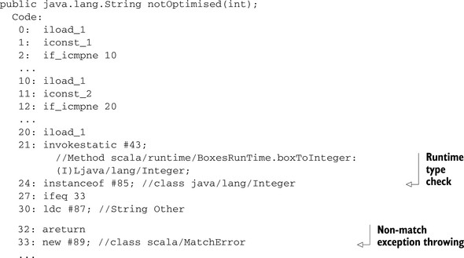
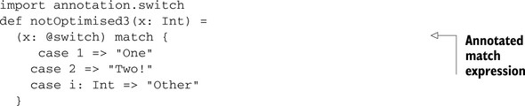

{% include JB/setup %}
{% raw %}
<div>

<div class="calibre5"></div><h2 class="chapter" id="ch03">Chapter 3. <a id="ch03__title" class="calibre6"></a>Modicum of style—coding conventions
      </h2>
      <p class="calibre2"> </p><table cellspacing="5" width="100%" border="1" class="calibre10"><colgroup class="calibre19"><col width="550" class="calibre12"/></colgroup><tbody class="calibre13"><tr class="calibre14"><td class="calibre20"/>
            </tr></tbody></table><div class="calibre4">
         
         <b id="ch03sb01" class="calibre21">In this chapter</b>
         
         <p class="calibre22"></p>
         <ul class="calibre23"><li class="calibre24">The dangers of dragging old coding conventions into Scala</li>
            
            <li class="calibre24">Working with end-of-line inference</li>
            
            <li class="calibre24">Avoiding dangerous names for variables</li>
            
            <li class="calibre24">Ensuring correct behavior with annotations</li>
            
         </ul></div>
      <table cellspacing="5" width="100%" border="1" class="calibre10"><colgroup class="calibre19"><col width="550" class="calibre12"/></colgroup><tbody class="calibre13"><tr class="calibre14"><td class="calibre20"/>
            </tr></tbody></table><p class="calibre2"> </p><p class="noind">This chapter presents style suggestions that will help you avoid compiler or runtime errors. Style issues are usually a “holy
         war” among developers, who each has her own opinions. But there are certain things that Scala allows from a style perspective
         that can cause logic or runtime issues in your programs. This chapter doesn’t try to proselytize you into whether you should
         place spaces between parenthesis or what the best number of spaces for indentation is. This chapter merely presents a few
         styles that will cause real issues in Scala, and why you should modify your preferred style accordingly, if needed.
      </p>
      
      <p class="noind">We discuss why placing opening braces for block expressions can convey different meanings to the compiler. Operator notation
         can cause issues if the compiler <a id="iddle1167" class="calibre25"></a><a id="iddle1168" class="calibre25"></a>can’t tell where a line ends. Also, when naming variables in Scala, there are some names that are syntactically valid but
         will cause compiler or runtime errors. Finally, we discuss the benefits of compile-time warnings and how you can use annotations
         to increase the helpfulness of the Scala compiler. Let’s start by looking at some common coding conventions.
      </p>
      
      
      <h3 id="ch03lev1sec1" class="calibre17"><a id="ch03lev1sec1__title" class="calibre6"></a>3.1. Avoid coding conventions from other languages
      </h3>
      
      <p class="noind">I’ve found that my style when writing in a new language tends to borrow heavily from styles I use in other languages until
         I’ve learned the language well. Scala is no exception. A lot of users come from Java or Ruby languages and you can see this
         influence in the syntax. Over time, this style will change and adjust to accommodate the new language as certain guidelines
         are found to cause issues in the new language. As such, it’s important to understand exactly where your style is coming from
         and whether that style makes sense in the new language. In fact, it’s not just the language itself that dictates style. You
         must consider many human social interactions, especially if you work in a company with a large developer base.
      </p>
      
      <p class="noind">One thing that always frustrated me when using C++ was coding conventions that were developed before the ready availability
         of cheap mature C++ IDEs. An IDE can negate the need for a lot of coding conventions by visually altering code based on a
         good semantic parse. IDEs can also allow developers to click-through method calls into method definitions or declarations
         to quickly get a feel for what’s going on in code. A good modern IDE makes a lot of “standard practice” coding conventions
         unnecessary. But this doesn’t erase the need for <i class="calibre9">any</i> coding conventions. Coding conventions do serve a few purposes, which can be boiled down into three categories: code discovery,
         uniformity, and error prevention.
      </p>
      
      <p class="noind">Error prevention conventions are style rules that help avoid bugs in production code. This could be anything from marking
         method arguments as final in Java to marking all single argument constructors as explicit in C++. The goal of these style
         rules will be obvious to any experienced developer of that language.
      </p>
      
      <p class="noind">Uniformity rules are about keeping the look of code the same across a project. These are a necessary evil in development workshops
         and the cause of style wars. Without them, version control history can become misaligned as developers fight to push their
         own personal style, or lack thereof. With them, moving between source files requires little “readability” mental adjustments.
         These rules are things like how many spaces to put between parentheses.
      </p>
      
      <p class="noind">Code discovery rules are about enabling engineers to easily reason through code and figure out what another developer intended.
         These rules usually take the form of variable naming rules, such as placing <kbd class="calibre18">m_</kbd> in front of member variables or prefixing interfaces with a capital <kbd class="calibre18">I</kbd>. See <a href="#ch03table01" class="calibre7">table 3.1</a></p>
      
      <p class="noind">Code discovery should align with the development environments that are expected in a team. If a team is using vanilla VI for
         editing, it will be more useful to add more code discovery guidelines than another project. If the team has a set of IDE <a id="iddle1124" class="calibre25"></a><a id="iddle1165" class="calibre25"></a><a id="iddle1169" class="calibre25"></a>power users, it would need less code discovery rules, as the IDE will provide many alternative means of improving discovery.
      </p>
      
      <h5 class="notetitle" id="ch03table01">Table 3.1. <a id="ch03table01__title" class="calibre25"></a>Coding style examples
      </h5>
      <table cellspacing="5" frame="hsides" rules="cols" cellpadding="8" width="100%" class="calibre26"><colgroup span="3" class="calibre11"><col width="200" class="calibre12"/><col width="200" class="calibre12"/><col width="150" class="calibre12"/></colgroup><thead class="calibre27"><tr class="calibre14"><th class="docTableCell1" scope="col" valign="top">
                  <p class="noind">Error prevention rules</p>
               </th>
               <th class="docTableCell1" scope="col" valign="top">
                  <p class="noind">Uniformity rules</p>
               </th>
               <th class="docTableCell1" scope="col" valign="top">
                  <p class="noind">Code discovery rules</p>
               </th>
            </tr></thead><tbody class="calibre13"><tr class="calibre14"><td class="docTableCell" valign="top"><ul class="calibre23"><li class="calibre24">(C++) Don’t use implicit conversions</li>
                  </ul></td>
               <td class="docTableCell" valign="top"><ul class="calibre23"><li class="calibre24">Indentations are three spaces</li>
                  </ul></td>
               <td class="docTableCell" valign="top"><ul class="calibre23"><li class="calibre24">(C++) Member variables prefixed with m_</li>
                  </ul></td>
            </tr><tr class="calibre14"><td class="docTableCell" valign="top"><ul class="calibre23"><li class="calibre24">(Java) Mark all arguments final</li>
                  </ul></td>
               <td class="docTableCell" valign="top"><ul class="calibre23"><li class="calibre24">Place one space after opening parenthesis and one space before closing parenthesis</li>
                  </ul></td>
               <td class="docTableCell" valign="top"><ul class="calibre23"><li class="calibre24">(Eclipse) Interface names prefixed with I</li>
                     
                  </ul></td>
            </tr></tbody></table><p class="noind">The way you should develop coding conventions for a team is to:</p>
      
      <p class="calibre22"></p>
      <ol class="calibre29"><li class="calibre24">Start with error prevention rules. These will usually be copied from other projects in the same language, but you may need
            to create new rules.
         </li>
         
         <li class="calibre24">Develop discovery related rules, such as how to name packages and where to place source files. These should match the development
            environments used by team members.
         </li>
         
         <li class="calibre24">Follow up the rules defined above with any uniformity related rules required for the team. These rules vary from team to team
            and can be fun to agree upon. When creating uniformity guidelines, you should keep in mind automated tool support.
         </li>
         
      </ol><p class="calibre2"> </p><table cellspacing="5" width="100%" border="1" class="calibre10"><colgroup class="calibre19"><col width="550" class="calibre12"/></colgroup><tbody class="calibre13"><tr class="calibre14"><td class="calibre20"/>
            </tr></tbody></table><h5 class="notetitle" id="ch03note01">Automated Style Tooling</h5>
      
      
      <p class="noindclose">Many tools can automatically check style rules or refactor existing code into a given style. This can help new engineers on
         the project save time until they become accustomed to the style. For Scala, you should check out the Scalariform project <a href="http://mng.bz/78G9" class="calibre7">http://mng.bz/78G9</a>, which is a tool to automatically refactor Scala code given a set of style rules.
      </p>
      
      <table cellspacing="5" width="100%" border="1" class="calibre10"><colgroup class="calibre19"><col width="550" class="calibre12"/></colgroup><tbody class="calibre13"><tr class="calibre14"><td class="calibre20"/>
            </tr></tbody></table><p class="calibre2"> </p><p class="noind">The issue nowadays is that most developers have a set of coding guidelines they prefer and pull them from project to project
         regardless of the language or the team. When starting a new project and developing new coding standards, make sure you don’t
         just pull conventions from previous languages. Scala syntax isn’t a direct C-clone; there are some pitfalls that certain coding
         styles will create in the language. We show an example with defining code blocks in Scala.
      </p>
      
      
      <h4 id="ch03lev2sec1" class="calibre28">3.1.1. <a id="ch03lev2sec1__title" class="calibre25"></a>The block debacle
      </h4>
      
      <p class="noind">A common theme to C-style languages is code blocks, typically denoted with <kbd class="calibre18">{}</kbd>. Code blocks are sections of code that execute within loops, <kbd class="calibre18">if</kbd> statements, closures, or new variable namespaces. Coding standards tend to take two approaches with blocks: same line opening
         brace or next line opening brace.
      </p>
      
      <pre id="PLd0e4864" class="calibre8">if(test) {
  ...
}</pre>
      
      <p class="noind"><a id="iddle1368" class="calibre25"></a>This code shows a same line opening brace, which I prefer (go SLOBs!). In many languages, the choice between same line and
         next line opening brace doesn’t matter. This is not the case in Scala, where semicolon inference can cause issues in a few
         key places. This makes the next line opening brace style error-prone. The easiest way to show the issue is with the definition
         of methods. Let’s look at a common Scala method:
      </p>
      
      <pre id="PLd0e4879" class="calibre8">def triple(x: Int) =
{
  x * 3
}</pre>
      
      <p class="noind">The more idiomatic Scala convention for a function as simple as <kbd class="calibre18">triple</kbd> is to define it on one line with no code block. This is a toy example though, so we’ll assume you have a good enough reason
         to use a code block, or your coding convention specifies you always having code blocks. In any case, the above function works
         perfectly fine. Now let’s try to make a function that returns <kbd class="calibre18">Unit</kbd> using the convenience syntax:
      </p>
      
      <pre id="PLd0e4894" class="calibre8">def foo()
{
  println("foo was called")
}</pre>
      
      <p class="noind">This method will compile fine when used from the interpretive session, however it fails utterly when used inside a class,
         object, or trait definition in Scala 2.7.x and below. To reproduce the behavior in Scala 2.8, we add another line between
         the method name and the opening brace. In many C-style languages, including Java, this change is acceptable. In Scala, we
         see the issue, as shown in the following listing:
      </p>
      
      
      
      <h5 class="notetitle" id="ch03list1">Listing 3.1. <a id="ch03list1__title" class="calibre25"></a>Next line opening brackets causing issues
      </h5>
      
      <p class="center1"></p>
      
      
      <p class="noind">Inside of the <kbd class="calibre18">FooHolder</kbd> class definition block, Scala sees the <kbd class="calibre18">def foo()</kbd> line of code as an abstract method. This is because it doesn’t catch the opening brace on the next line, so it assumes <kbd class="calibre18">def foo()</kbd> is a complete line. When it encounters the block expression, it assumes it found a new anonymous code block that should be
         executed in the construction of the class.
      </p>
      
      <p class="noind">A simple solution to this problem exists: Add a new style guideline that requires the <kbd class="calibre18">=</kbd> syntax for all method definitions. This should solve any issues you might experience with opening brackets on the next line.
         Let’s try it out in the following listing:
      </p>
      
      
      <p class="noind"></p>
      
      
      <h5 class="notetitle" id="ch03list2">Listing 3.2. <a id="ch03list2__title" class="calibre25"></a>Next line opening brackets compiling correctly
      </h5>
      
      <p class="center1"></p>
      
      
      <p class="noind"><a id="iddle1166" class="calibre25"></a><a id="iddle1284" class="calibre25"></a><a id="iddle1471" class="calibre25"></a><a id="iddle1977" class="calibre25"></a>The <kbd class="calibre18">=</kbd> added after the <kbd class="calibre18">def foo(): Unit</kbd> tells the compiler that you’re expecting an expression that contains the body of the foo function. The compile will then
         continue looking in the file for the code block. This solves the issue for method definitions. Other types of block expressions
         can still cause issues. In Scala, <kbd class="calibre18">if</kbd> statements don’t require code blocks at all. This means the same kind of behavior could occur on an <kbd class="calibre18">if</kbd> statement if not properly structured. Luckily in that case, the compiler will catch and flag an error. The issue comes with
         <kbd class="calibre18">else</kbd> statements. Let’s try the following:
      </p>
      
      <pre id="PLd0e4983" class="calibre8">if(true)
{
  println("true!")
}
else
{
  println("false!")
}</pre>
      
      <p class="noind">In an interpretive session, you can’t enter this code because it will compile at the end of the first code block (the <kbd class="calibre18">if</kbd> statement) because it assumes the statement is complete. In a class, this <i class="calibre9">should</i> function as desired.
      </p>
      <p class="calibre2"> </p><table cellspacing="5" width="100%" border="1" class="calibre10"><colgroup class="calibre19"><col width="550" class="calibre12"/></colgroup><tbody class="calibre13"><tr class="calibre14"><td class="calibre20"/>
            </tr></tbody></table><h5 class="notetitle" id="ch03note02">Should My Coding Style Allow Me to Paste Code into an Interpretive Session to Test It?</h5>
      
      
      <p class="noindclose">The choice depends on your development environment. Most good tools allow you to automatically start an interpretive session
         against a compiled instance of your project. This means you wouldn’t have to cut and paste code from your project into the
         session; however, in practice I find that sometimes my project isn’t compiling and I want to test out a feature. In this case,
         I have to edit the files before pasting into the interpretive session.
      </p>
      
      <table cellspacing="5" width="100%" border="1" class="calibre10"><colgroup class="calibre19"><col width="550" class="calibre12"/></colgroup><tbody class="calibre13"><tr class="calibre14"><td class="calibre20"/>
            </tr></tbody></table><p class="calibre2"> </p><p class="noind">Make sure when you’re setting up a project, especially in a language you haven’t used extensively before, that you rethink
         your style guidelines and choose ones that fit the new language and the environment you will be developing in. Don’t merely
         pull what worked before in Language Foo and assume it will work well in Scala. Challenge your decisions!
      </p>
      
      <p class="noind">A collaborative effort is in place to create a “good enough” style guide for Scala. This style guide should act as a good
         starting point and is currently located at <a href="http://mng.bz/48C2" class="calibre7">http://mng.bz/48C2</a>.
      </p>
      
      
      
      
      
      <h3 id="ch03lev1sec2" class="calibre17"><a id="ch03lev1sec2__title" class="calibre6"></a>3.2. Dangling operators and parenthetical expressions
      </h3>
      
      <p class="noind"><a id="iddle1248" class="calibre25"></a><a id="iddle1310" class="calibre25"></a><a id="iddle1351" class="calibre25"></a><a id="iddle1728" class="calibre25"></a><a id="iddle1760" class="calibre25"></a>One style adjustment that can drastically help in Scala is to dangle operators at the end of lines. A dangling operator is
         an operator, such as <kbd class="calibre18">+</kbd> or <kbd class="calibre18">-</kbd> that’s the last nonwhitespace character in a line of code. Dangling operators will help the compiler determine the true end
         of a statement. Earlier, we described how this is important for block expressions. The concept works just as well with other
         types of expressions in Scala.
      </p>
      
      <p class="noind">“Large string aggregation” is a great instance when dangling operators can help out the compiler or when you’re trying to
         create a large string such that the whole definition doesn’t fit on one line. Let’s look at an example in Java:
      </p>
      
      <pre id="PLd0e5061" class="calibre8">class Test {
   private int x = 5;
   public String foo() {
     return "HAI"
       + x
       + "ZOMG"
       + "\n";
   }
}</pre>
      
      <p class="noind">The <kbd class="calibre18">Test</kbd> class has a <kbd class="calibre18">foo</kbd> method that’s attempting to create a large string. Rather than having dangling aggregation operators, the <kbd class="calibre18">+</kbd> operator is found on the next line. A simple translation of this to Scala will fail to compile. Let’s take a look:
      </p>
      
      <pre id="PLd0e5079" class="calibre8">object Test {
   val x = 5
   def foo = "HAI"
     + x
     + "ZOMG"
     + "\n"
}</pre>
      
      <p class="noind">This will fail to compile with the error message “error: value unary_+ is not a member of java.lang.String”. Again, this is
         because the compiler is inferring the end of line before it should. To solve this issue, we have two options: dangling operators
         or parentheses. A dangling operator is an operator that ends a line, letting the compiler know there’s more to come, as shown
         in the following listing:
      </p>
      
      
      
      <h5 class="notetitle" id="ch03list3">Listing 3.3. <a id="ch03list3__title" class="calibre25"></a>Using dangling operators
      </h5>
      <pre id="PLd0e5091" class="calibre8">object Test {
   val x = 5
   def foo = "HAI" +
     x +
     "ZOMG" +
     "\n"
}</pre>
      
      <p class="noind">Dangling operators have the advantage of maintaining a minimal amount of syntax. This is the preferred style for the compiler
         itself.
      </p>
      
      <p class="noind"><a id="iddle1683" class="calibre25"></a><a id="iddle1686" class="calibre25"></a><a id="iddle2104" class="calibre25"></a>An alternative to dangling operators is wrapping expressions in parentheses. You wrap any expression that spans multiple lines
         in parentheses. This has the advantage of allowing potentially arbitrary amount of whitespace between members of the expression.
         Let’s take a look at the following listing:
      </p>
      
      
      
      <h5 class="notetitle" id="ch03list4">Listing 3.4. <a id="ch03list4__title" class="calibre25"></a>Using parentheses
      </h5>
      <pre id="PLd0e5125" class="calibre8">object Test {
   val x = 5
   def foo = ("HAI"
     + x
     + "ZOMG"
     + "\n")
}</pre>
      
      <p class="noind">Whichever one of these style guidelines you choose is up to you and your development shop. I prefer dangling operators, but
         both options are valid Scala syntax and will help you avoid parsing issues.
      </p>
      
      <p class="noind">Now that we’ve discussed working around inference in the compiler, let’s discuss another way to avoid issues in the compiler:
         the naming of variables.
      </p>
      
      
      
      <h3 id="ch03lev1sec3" class="calibre17"><a id="ch03lev1sec3__title" class="calibre6"></a>3.3. Use meaningful variable names
      </h3>
      
      <p class="noind">One of the most common adages in any programming language is to use meaningful argument or variable names. Code clarity is
         a commonly ascribed benefit of meaningful argument names. Meaningful names can help take an arcane piece of code and turn
         it into something a new developer can learn in moments.
      </p>
      
      <p class="noind">Some variables exist for which it is hard to determine appropriate names. In my experience this usually comes when implementing
         some kind of mathematical algorithm, like fast Fourier transforms, where the domain has well-known variable names. In this
         case, it’s far better to use the standard symbols rather than invent your own names. In the case of Fourier transforms, the
         equation is shown in <a href="#ch03fig01" class="calibre7">figure 3.1</a>.
      </p>
      
      
      
      <h5 class="notetitle" id="ch03fig01">Figure 3.1. <a id="ch03fig01__title" class="calibre25"></a>Fourier transform equation
      </h5>
      
      <p class="center1"></p>
      
      
      <p class="noind">When implementing a Fourier transform, using a variable named <i class="calibre9">N</i> to represent the size of the input data, <i class="calibre9">n</i> to represent the index of a summing operation and <i class="calibre9">k</i> to represent the index to an output array is acceptable, as it’s the notation used in the function. In many of languages,
         you end up “spelling” symbols because the language doesn’t support mathematical symbols directly. In Scala, we can directly
         write ? rather than PI if we desire.
      </p>
      
      <p class="noind">In this section well look at “reserved” characters that you shouldn’t use for variable names, as well as using named and default
         parameters effectively. Reserved characters are characters the compiler reserves for internal use, but it doesn’t warn you
         if you use them. This can cause issues at compile time or, even worse, runtime. These issues could be anything from a warning
         message on code that’s perfectly valid, or exceptions thrown at runtime.
      </p>
      
      <p class="noind">Scala provides a flexible naming scheme for variables and methods. <a id="iddle1074" class="calibre25"></a>You use extended characters, if you desire to code mathematical equations directly. This allows you to write functions that
         look like mathematical symbols if you’re writing some form of advanced mathematics library. My recommendation here is to ensure
         that whatever characters you use in your variable and method names, make sure that most developers in your shop know how to
         input them on their keyboards or ensure there’s a direct key for it. Nothing is worse than having to copy and paste special
         characters into a program because you desire to use them.
      </p>
      
      <p class="noind">An example of Scala’s flexible naming is the duality of <kbd class="calibre18">=&gt;</kbd> and <kbd class="calibre18">?</kbd> for defining closures and pattern matching. To even use the ? character in this book, I had to look it up and paste it into
         my editor. The best example of unicode and non-unicode operators comes from the Scalaz library. Let’s look at one of the examples
         from the Scalaz source code:
      </p>
      
      <pre id="PLd0e5198" class="calibre8">val a, b, c, d = List(1)
...
a ? b ? c ? d apply {_ + _ + _ + _}
a |@| b |@| c |@| d apply {_ + _ + _ + _}</pre>
      
      <p class="noind">As you can see, Scalaz has provided both the <kbd class="calibre18">|@|</kbd> and the <kbd class="calibre18">?</kbd> methods on its “Applicative Builder.” We discuss applicative style application in detail in <a href="kindle_split_019.html#ch11lev1sec3" class="calibre7">section 11.3</a>. For now let’s focus on the method names.
      </p>
      
      <p class="noind">One name used for the applicative builder is a funny-looking unicode character (⊛), and the other is something someone could
         type without copy-paste or knowing what the correct keycode is ahead of time (<kbd class="calibre18">|@|</kbd>). By providing both, Scalaz has appealed to average developers and to those situations when using unicode characters proves
         you’re the better nerd at the office. I would recommend following in Scalaz’s footsteps if you wish to provide unicode operator
         support.
      </p>
      
      <p class="noind">Although random unicode characters can be frustrating for developers, there’s one character that’s easy to type that can cause
         real issues in code: the dollar sign ($).
      </p>
      
      
      <h4 id="ch03lev2sec2" class="calibre28">3.3.1. <a id="ch03lev2sec2__title" class="calibre25"></a>Avoid $ in names
      </h4>
      
      <p class="noind">Scala allows naming to be so flexible, you can even interfere with its own name mangling scheme for higher level concepts
         on the JVM. <i class="calibre9">Name mangling</i> refers to the compiler altering, or mangling, the name of a class or method to translate it onto the underlying platform.
         This means that if I looked at the classfile binaries Scala generates, I may not find a class with the same name as what I
         use in my code. This was a common technique in C++ so that it could share a similar binary interface with C but allow for
         method overloading. For Scala, name mangling is used for nested classes and helper methods.
      </p>
      
      <p class="noind">As an example, let’s create a simple trait and object pairing and look at how Scala names the underlying JVM classes and interfaces.
         When Scala has to generate anonymous function or classes, it uses a name containing the class it was defined in—the string
         <kbd class="calibre18">anonfun</kbd> and a number. These strings are all joined using the <kbd class="calibre18">$</kbd> character to create an entity. Let’s compile a sample and see what the directory looks like afterwards. <a id="iddle1107" class="calibre25"></a><a id="iddle1345" class="calibre25"></a>This sample will be a simple main method that computes the average of a list of numbers, as shown in the following listing:
      </p>
      
      
      
      <h5 class="notetitle" id="ch03list5">Listing 3.5. <a id="ch03list5__title" class="calibre25"></a>Simple method to calculate an average
      </h5>
      <pre id="PLd0e5260" class="calibre8">object Average {
   def avg(values: List[Double]) = {
     val sum = values.foldLeft(0.0) { _ + _ }
     sum / values.size.toDouble
   }
}</pre>
      
      <p class="noind">The class is rather simple. We define an <kbd class="calibre18">Average</kbd> object that contains a method: <kbd class="calibre18">avg</kbd>. In the <kbd class="calibre18">avg</kbd> method, we define a closure <kbd class="calibre18">{ _ + _ }</kbd> that will compile to an anonymous function class. Let’s see the compiled files for this class:
      </p>
      
      <pre id="PLd0e5281" class="calibre8">$ ls *.class
Average$$anonfun$1.class Average.class Average$.class</pre>
      
      <p class="noind">Some interesting JVM classes are compiled here. The <kbd class="calibre18">Average</kbd> object gets compiled into the <kbd class="calibre18">Average$</kbd> class with the <kbd class="calibre18">Average</kbd> class having the static method forwarded to the <kbd class="calibre18">Average$</kbd> object. This is the mechanism Scala uses for “singleton objects” to ensure that they’re true objects but look similar to
         static method invocations to Java. The anonymous closure we sent to <kbd class="calibre18">foldLeft ({ _ + _ })</kbd> got compiled into the <kbd class="calibre18">Average$$anonfun$1</kbd> class. This is because it happens to be the first anonymous function defined in the <kbd class="calibre18">Average$</kbd> class As you can see, the <kbd class="calibre18">$</kbd> character is used heavily when creating real JVM classes for advanced Scala features.
      </p>
      
      <p class="noind">Let’s play a game called “break Scala’s closures.” This game will help outline the issues with using <kbd class="calibre18">$</kbd> in parameter names, something useful for those who are interested in adding plugin functionality to Scala, but not for general
         developers. Feel free to skip to <a href="#ch03lev2sec3" class="calibre7">section 3.3.2</a> if you’re not interested in this.
      </p>
      
      <p class="noind">What happens if we define our own class that has the same mangled name as the anonymous function? Either our class or the
         anonymous function class will be used at runtime. Let’s create a new Average.scala file in the following listing and use the
         <kbd class="calibre18">`</kbd> syntax to create a new mischievous class and see what happens:
      </p>
      
      
      
      <h5 class="notetitle" id="ch03list6">Listing 3.6. <a id="ch03list6__title" class="calibre25"></a>Average.scala file with mischievous class
      </h5>
      
      <p class="center1"></p>
      
      
      <p class="noind"><a id="iddle1075" class="calibre25"></a>The <kbd class="calibre18">Average</kbd> object is the same as defined in listing 3.6, but we’ve created our mischievous class called <kbd class="calibre18">Average$$anonfun$1</kbd>. This compiles fine, so we know the compiler won’t catch our mischievousness. Let’s see what happens when we try to use it
         in an interactive interpreted session:
      </p>
      
      <pre id="PLd0e5355" class="calibre8">scala&gt; Average.avg(List(0.0,1.0,0.5))
O MY!
java.lang.IncompatibleClassChangeError: vtable stub
  at ...LinearSeqLike$class.foldLeft(LinearSeqLike.scala:159)
  at scala.collection.immutable.List.foldLeft(List.scala:46)
  at Average$.avg(Average.scala:3)</pre>
      
      <p class="noind">The mischievous class is instantiated, as seen by the “O MY!” output. The mischievous class is even passed into the <kbd class="calibre18">foldLeft</kbd> method as seen in the stack trace. It isn’t until the <kbd class="calibre18">foldLeft</kbd> function attempts to use the class instance that it realizes that this class isn’t a closure. Well, what are the odds that
         someone would name a class the same kind of arcane string that occurs from name mangling? Probably low, but the <kbd class="calibre18">$</kbd> character still gives Scala some issues. When defining nested classes, Scala also uses the <kbd class="calibre18">$</kbd> character to mangle names, similar to Java inner classes. We can cause similar errors by defining mischievous inner classes,
         as shown in the following listing:
      </p>
      
      
      
      <h5 class="notetitle" id="ch03list7">Listing 3.7. <a id="ch03list7__title" class="calibre25"></a>Average.scala with mischievous inner classes
      </h5>
      
      <p class="center1"></p>
      
      
      <p class="noind">In general then, it’s best to avoid the <kbd class="calibre18">$</kbd> character altogether in your naming schemes. It’s also best to avoid making an inner class with the name <kbd class="calibre18">anonfun</kbd> or <kbd class="calibre18">$anonfun</kbd> that has its own numbered inner classes, although I have no idea why you would desire to do so. For completeness, it’s best
         to totally avoid the mangling schemes of the compiler.
      </p>
      
      <p class="noind">The compiler also uses name mangling for default parameters. In Scala default parameters are also encoded as a method with
         the name default and an ordinal representing the order the argument appears in the function. This is in the method namespace,
         not the classname <kbd class="calibre18">namespace</kbd>. To cause problems, we need to name a method something simple like <kbd class="calibre18">avg$default$1</kbd>.
      </p>
      
      <pre id="PLd0e5408" class="calibre8">object Average {
   def avg(values: List[Double] = List(0.0,1.0,0.5)) = {
     val sum = values.foldLeft(0.0) { _ + _ }
     sum / values.size.toDouble
   }

   def 'avg$default$1' = List(0.0,0.0,0.0)
}</pre>
      
      <p class="noind"><a id="iddle1684" class="calibre25"></a><a id="iddle1755" class="calibre25"></a>Luckily in this case the compiler will warn that the method <kbd class="calibre18">avg$default$1</kbd> is a duplicate. This isn’t the most obvious error message, but then again, the method name isn’t exactly common. So, although
         it’s possible to use <kbd class="calibre18">$</kbd> in method names and class names, it can get you into trouble. The examples I’ve posted are somewhat extreme, but illustrate
         that name mangling issues can be rather tricky to track down. Therefore you should avoid the <kbd class="calibre18">$</kbd> character entirely.
      </p>
      
      
      
      <h4 id="ch03lev2sec3" class="calibre28">3.3.2. <a id="ch03lev2sec3__title" class="calibre25"></a>Working with named and default parameters
      </h4>
      
      <p class="noind">Scala 2.8.x brings with it the ability to use named parameters. This means that the names you give parameters of methods become
         part of the public API. Your parameter names become part of the API, and changing them can and will break clients. Also, Scala
         allows users to define different parameter names in subclasses. Let’s look at the named and default parameter feature.
      </p>
      <p class="calibre2"> </p><table cellspacing="5" width="100%" border="1" class="calibre10"><colgroup class="calibre19"><col width="550" class="calibre12"/></colgroup><tbody class="calibre13"><tr class="calibre14"><td class="calibre20"/>
            </tr></tbody></table><div class="calibre4">
         
         <b id="ch03sb02" class="calibre21">Rule 6: Use meaningful parameter names</b>
         
         <p class="noind">In Scala, parameter names are part of the API and should follow all the coding conventions used for method and variable names.</p>
         
      </div>
      <table cellspacing="5" width="100%" border="1" class="calibre10"><colgroup class="calibre19"><col width="550" class="calibre12"/></colgroup><tbody class="calibre13"><tr class="calibre14"><td class="calibre20"/>
            </tr></tbody></table><p class="calibre2"> </p><p class="noind">Defining named parameters in Scala is easy, it’s required syntax. Whatever name you declare for a parameter is the name you
         can use when calling it. Let’s define a simple <kbd class="calibre18">Foo</kbd> class with a single method <kbd class="calibre18">foo</kbd>, but with several parameters. These parameters will be set with default values. The following listing shows the various types
         of usage:
      </p>
      
      <h5 class="notetitle" id="ch03list8">Listing 3.8. <a id="ch03list8__title" class="calibre25"></a>Simple named parameter usage
      </h5>
      <p class="center1"></p>
      <p class="center1"></p>
      
      <p class="noind">First, notice that the <kbd class="calibre18">foo</kbd> method declares defaults for all of its parameters. This allows us to call the method without passing any arguments. Things
         are more interesting when we pass arguments using their names, like when we write <kbd class="calibre18">x.foo(two = "not two")</kbd>.
      </p>
      
      <p class="noind">Scala still allows argument placement syntax, where the order of the parameters is the same in the definition site and the
         call site. This can be seen in the line <kbd class="calibre18">x.foo(0, "zero", 0.1)</kbd>. On this call, <kbd class="calibre18">0</kbd> is the first parameter and is referred to in the function as the argument <kbd class="calibre18">one</kbd>. This is a mixed mode usage.
      </p>
      
      <p class="noind"><i class="calibre9">Mixed mode</i> is where you can use argument placement syntax for some arguments, and named parameters for the rest. This mode is obviously
         limited in that you can only use placement syntax for beginning arguments but is shown in the last line: <kbd class="calibre18">x.foo(4, three = 0.4)</kbd>. In this line, the first parameter, <kbd class="calibre18">4</kbd>, is passed as argument <kbd class="calibre18">one</kbd> and the argument <kbd class="calibre18">three</kbd> is passed as <kbd class="calibre18">0.4</kbd>.
      </p>
      
      <p class="noind">So, why all the fuss over argument naming? Argument names become confusing with inheritance in the mix.</p>
      
      <p class="noind">Scala uses the static type of a variable to bind parameter names, however the defaults are determined by the runtime type.
         Say it to yourself: <i class="calibre9">Names are static; values are runtime</i>. Let’s look at a “simple” example of chaos ... er ... inheritance in the following listing:
      </p>
      
      <h5 class="notetitle" id="ch03list9">Listing 3.9. <a id="ch03list9__title" class="calibre25"></a>Named parameters and inheritance
      </h5>
      <p class="center1"></p>
      <p class="center1"></p>
      
      <p class="noind"><a id="iddle1157" class="calibre25"></a><a id="iddle1352" class="calibre25"></a><a id="iddle1661" class="calibre25"></a><a id="iddle1685" class="calibre25"></a><a id="iddle1748" class="calibre25"></a><a id="iddle1749" class="calibre25"></a><a id="iddle1756" class="calibre25"></a><a id="iddle1759" class="calibre25"></a><kbd class="calibre18">Parent</kbd> is a parent class that defined method <kbd class="calibre18">foo</kbd>. <kbd class="calibre18">Child</kbd> extends the <kbd class="calibre18">foo</kbd> method, but notice the naming difference. We’ve purposely reused the same names in differing orders to be confusing, but
         we’ve left the implementation of the method the same. If we instantiate a <kbd class="calibre18">Parent</kbd> class and execute <kbd class="calibre18">foo</kbd>, we see the value <kbd class="calibre18">3</kbd>. When we instantiate a <kbd class="calibre18">Child</kbd> class, and execute <kbd class="calibre18">foo</kbd> we see <kbd class="calibre18">7</kbd> (<i class="calibre9">default values are runtime!</i>). The interesting part comes when we instantiate the <kbd class="calibre18">Child</kbd> class with the static type of <kbd class="calibre18">Parent</kbd>. When we call <kbd class="calibre18">foo(bar = 1)</kbd> on a <kbd class="calibre18">Child</kbd> instance with a static type of <kbd class="calibre18">Child</kbd>, we see the value <kbd class="calibre18">4</kbd>. If we call <kbd class="calibre18">foo(bar=1)</kbd> on a <kbd class="calibre18">Child</kbd> instance with static type of <kbd class="calibre18">Parent</kbd> we see the value of <kbd class="calibre18">5</kbd>.
      </p>
      
      <p class="noind">What happened? In the <kbd class="calibre18">Child</kbd> class, we defined the argument names in the reverse order of the <kbd class="calibre18">Parent</kbd> class. The unfortunate circumstance of named parameters in Scala is that they use the static type to determine ordering.
         Remember our earlier mantra: <i class="calibre9">values are runtime; names are static</i>.
      </p>
      
      <p class="noind">Renaming arguments in a child class isn’t a warning in the compiler. As of Scala 2.8.0, there’s no way to make this warning
         without writing your own compiler plugin. This naming issue may not be a huge deal when you’re the author of an entire type
         hierarchy, but it might be when working on a larger team where others are consuming classes from others and are unhappy with
         parameter naming schemes from other developers.
      </p>
      <p class="calibre2"> </p><table cellspacing="5" width="100%" border="1" class="calibre10"><colgroup class="calibre19"><col width="550" class="calibre12"/></colgroup><tbody class="calibre13"><tr class="calibre14"><td class="calibre20"/>
            </tr></tbody></table><h5 class="notetitle" id="ch03note03">Deprecating Parameter Names</h5>
      
      
      <p class="noindclose">In Scala 2.8.1, there will most likely be a mechanism for deprecating parameter names. This is to be done with an annotation
         on the parameter itself, declaring the old name. Clients of your library can then use both names, albeit the one will issue
         a warning. As the specifics may change, please follow the Scala mailing list and check the release notes of 2.8.1 for the
         mechanics of this.
      </p>
      
      <table cellspacing="5" width="100%" border="1" class="calibre10"><colgroup class="calibre19"><col width="550" class="calibre12"/></colgroup><tbody class="calibre13"><tr class="calibre14"><td class="calibre20"/>
            </tr></tbody></table><p class="calibre2"> </p><p class="noind">For some shops, particularly ones I’ve worked in, developers were allowed to disagree on method naming conventions because
         they never mattered before. As of Scala 2.8.0, they do. Ensure that your developers are aware of naming in general, and of
         this particular surprising change (at least surprising when coming from a language without named parameters).
      </p>
      
      <p class="noind">Remember that naming variables, classes, <i class="calibre9">and</i> parameters are all important in Scala. Misnaming can wind up in anything from a compile-time error to a subtle and hard-to-fix
         bug. This is one area where the compiler can’t offer much assistance besides helpful error messages.
      </p>
      
      
      
      
      <h3 id="ch03lev1sec4" class="calibre17"><a id="ch03lev1sec4__title" class="calibre6"></a>3.4. Always mark overridden methods
      </h3>
      
      <p class="noind">Scala did the world a great service when it introduced the <kbd class="calibre18">override</kbd> keyword. This keyword is used to demarcate when a method is intended to override vs. overload a method. If you neglect the
         keyword and the compiler finds you’re overriding a superclass method, it will emit an error. If you add the override keyword
         and no superclass has the defined method, the compiler will warn you. Thankfully, this is mostly enforced by the compiler.
         One scenario remains where override isn’t required but can cause issues: purely abstract methods. Scala has no abstract modifier:
         A purely abstract method is one that has no implementation.
      </p>
      
      
      <p class="noind"></p><p class="calibre2"> </p><table cellspacing="5" width="100%" border="1" class="calibre10"><colgroup class="calibre19"><col width="550" class="calibre12"/></colgroup><tbody class="calibre13"><tr class="calibre14"><td class="calibre20"/>
            </tr></tbody></table><div class="calibre4">
         
         <b id="ch03sb03" class="calibre21">Rule 7: Always mark overridden methods</b>
         
         <p class="noind"><a id="iddle1156" class="calibre25"></a><a id="iddle1545" class="calibre25"></a><a id="iddle1637" class="calibre25"></a><a id="iddle1638" class="calibre25"></a><a id="iddle2097" class="calibre25"></a>In Scala, while the <kbd class="calibre18">override</kbd> keyword is optional in some situations, it’s safe to always mark methods with <kbd class="calibre18">override</kbd>.
         </p>
         
      </div>
      <table cellspacing="5" width="100%" border="1" class="calibre10"><colgroup class="calibre19"><col width="550" class="calibre12"/></colgroup><tbody class="calibre13"><tr class="calibre14"><td class="calibre20"/>
            </tr></tbody></table><p class="calibre2"> </p><p class="noind">Let’s take a look at example <kbd class="calibre18">override</kbd> usage. We want to define a business service for an application. This service will be for users. We’ll allow them to log in,
         change their password and log out as well as validate that someone is still logged in. We’re going to make an abstract interface
         for users of our service. It should look like the following:
      </p>
      
      <pre id="PLd0e5746" class="calibre8">trait UserService {
  def login(credentials: Credentials): UserSession
  def logout(session: UserSession): Unit
  def isLoggedIn(session: UserSession): Boolean
  def changePassword(session: UserSession,
                    credentials: Credentials): Boolean
}</pre>
      
      <p class="noind">The service is rather simple. We define a <kbd class="calibre18">login</kbd> method that takes the user’s credentials and returns a new session for that user. We also define a <kbd class="calibre18">logout</kbd> method that takes a <kbd class="calibre18">UserSession</kbd> object and invalidates it and performs any cleanup that may be needed. Finally, we define two methods against the session.
         The <kbd class="calibre18">isLoggedIn</kbd> method will check to see if a <kbd class="calibre18">UserSession</kbd> is valid, meaning the user is logged in. The <kbd class="calibre18">changePassword</kbd> method will change the user’s password but only if the new password is legal and the <kbd class="calibre18">UserSession</kbd> is valid. Now let’s make a simple implementation that assumes any credentials are okay for any user and that all users are
         valid.
      </p>
      
      <pre id="PLd0e5776" class="calibre8">class UserServiceImpl extends UserService {
  def login(credentials: Credentials): UserSession =
    new UserSession {}
  def logout(session: UserSession): Unit
  def isLoggedIn(session: UserSession): Boolean = true
  def changePassword(session: UserSession,
      credentials: Credentials): Boolean = true
}</pre>
      
      <p class="noind">But wait, we forgot to add the override keyword. The method still compiles, so that means the override keyword wasn’t needed.
         Why? Scala doesn’t require the override keyword if your class is the first to define an abstract method. It also comes into
         play when using multiple inheritances, but we’ll look into this in a moment. For now, let’s see what happens in the following
         listing if we change the method signature in the parent class:
      </p>
      
      <h5 class="notetitle" id="ch03list10">Listing 3.10. <a id="ch03list10__title" class="calibre25"></a>Changing the underlying method
      </h5>
      <p class="center1"></p>
      <p class="center1"></p>
      
      <p class="noind"><a id="iddle2095" class="calibre25"></a><a id="iddle2096" class="calibre25"></a>Notice we’ve changed the <kbd class="calibre18">changePassword</kbd> method in the <kbd class="calibre18">UserService</kbd> trait. The new method compiles fine, but the <kbd class="calibre18">UserServiceImpl</kbd> class won’t compile. Because it’s concrete, the compiler will catch the fact that <kbd class="calibre18">changePassword</kbd> defined in the <kbd class="calibre18">User-Service</kbd> isn’t implemented. What happens if instead of an implementation, we’re providing a library with partial functionality? Let’s
         change <kbd class="calibre18">UserServiceImpl</kbd> to a trait, as shown in the following listing:
      </p>
      
      <h5 class="notetitle" id="ch03list11">Listing 3.11. <a id="ch03list11__title" class="calibre25"></a>Traits won’t cause compile errors
      </h5>
      <p class="center1"></p>
      <p class="center1"></p>
      
      <p class="noind">When we migrate <kbd class="calibre18">UserServiceImpl</kbd> to a trait, compilation now succeeds. This is an issue primarily when providing a library with no concrete implementations,
         or some form of DSL that’s expected to be extended. Therefore, only users of the library will notice this easy-to-prevent
         issue. All that’s required is to use the <kbd class="calibre18">override</kbd> modifier before any overridden method, as shown in the following listing:
      </p>
      
      
      
      <h5 class="notetitle" id="ch03list12">Listing 3.12. <a id="ch03list12__title" class="calibre25"></a>Traits will cause compile errors
      </h5>
      
      <p class="center1"></p>
      
      
      <p class="noind"><a id="iddle1268" class="calibre25"></a><a id="iddle1607" class="calibre25"></a>Because this is such an easy error for the compiler to catch, there’s no reason to run into the issue. What about the multiple
         inheritance we mentioned earlier? It’s time to look into how <kbd class="calibre18">override</kbd> interacts with multiple inheritance.
      </p>
      
      <p class="noind">Scala doesn’t require the <kbd class="calibre18">override</kbd> keyword when implementing abstract methods. This was done to help multiple inheritance. Let’s look at the classic “deadly
         diamond” inheritance problem. A deadly diamond occurs by creating a class that has two parent classes. Both of the parent
         classes must also be subclasses of the same parent-parent class. If you were to draw a picture of the inheritance relationship,
         you would see a diamond.
      </p>
      
      <p class="noind">Let’s start our own diamond by creating two traits, <kbd class="calibre18">Cat</kbd> and <kbd class="calibre18">Dog</kbd>, that extend a common base trait <kbd class="calibre18">Animal</kbd>. The <kbd class="calibre18">Animal</kbd> trait defines a method <kbd class="calibre18">talk</kbd> that’s also defined in <kbd class="calibre18">Cat</kbd> and <kbd class="calibre18">Dog</kbd>. Now imagine some mad scientist is attempting to combine cats and dogs to create some new species, the <kbd class="calibre18">KittyDoggy</kbd>. How well could they do this using the <kbd class="calibre18">override</kbd> keyword? Let’s define our three classes in the following listing and find out:
      </p>
      
      
      
      <h5 class="notetitle" id="ch03list13">Listing 3.13. <a id="ch03list13__title" class="calibre25"></a>Animal hierarchy with <kbd class="calibre18">override</kbd></h5>
      <pre id="PLd0e5919" class="calibre8">trait Animal {
  def talk: String
}

trait Cat extends Animal {
  override def talk: String = "Meow"
}

trait Dog extends Animal {
  override def talk: String = "Woof"
}</pre>
      
      <p class="noind">We define the <kbd class="calibre18">talk</kbd> method on the Animal trait to return a <kbd class="calibre18">String</kbd>. We then create the <kbd class="calibre18">Cat</kbd> and <kbd class="calibre18">Dog</kbd> traits with their own implementation of the <kbd class="calibre18">talk</kbd> method. Let’s pop open the REPL and try to construct our <kbd class="calibre18">KittyDoggy</kbd> experiment. Remember to cackle when typing, as shown in the following listing:
      </p>
      
      
      
      <h5 class="notetitle" id="ch03list14">Listing 3.14. <a id="ch03list14__title" class="calibre25"></a>Multiple inheritance and <kbd class="calibre18">override</kbd></h5>
      <pre id="PLd0e5951" class="calibre8">scala&gt; val kittydoggy = new Cat with Dog
kittydoggy: java.lang.Object with Cat with Dog = $anon$1@631d75b9

scala&gt; kittydoggy.talk
res1: String = Woof

scala&gt; val kittydoggy2 = new Dog with Cat
kittydoggy2: java.lang.Object with Dog with Cat = $anon$1@18e3f02a

scala&gt; kittydoggy2.talk
res2: String = Meow</pre>
      
      <p class="noind">First we attempt to combine <kbd class="calibre18">Cat</kbd> with <kbd class="calibre18">Dog</kbd>. This results in the <kbd class="calibre18">talk</kbd> operation picking up the <kbd class="calibre18">Dog</kbd> behavior and ignoring the <kbd class="calibre18">Cat</kbd> behavior. That’s not quite what our mad-scientist experiment wants to accomplish, so instead we try to combine a <kbd class="calibre18">Dog</kbd> with a <kbd class="calibre18">Cat</kbd>.
      </p>
      
      <p class="noind"><a id="iddle1750" class="calibre25"></a>This ends up pulling in the <kbd class="calibre18">Cat</kbd> behavior and ignoring the <kbd class="calibre18">Dog</kbd> behavior! In Scala, the last trait “wins” when it comes to class linearization and method delegation, so this isn’t unexpected.
      </p>
      
      <p class="noind"><i class="calibre9">Class linearization</i> refers to the order in which parent calls occur for a particular class. In the preceding example, for the type <kbd class="calibre18">Cat with Dog</kbd>, the parent calls would first try the <kbd class="calibre18">Dog</kbd> trait, then <kbd class="calibre18">Cat</kbd> and then <kbd class="calibre18">Animal</kbd>. Class linearization will be covered in more detail in the <a href="kindle_split_012.html#ch04lev1sec2" class="calibre7">section 4.2</a>.
      </p>
      
      <p class="noind">What happens now if we remove the <kbd class="calibre18">override</kbd> keyword from the <kbd class="calibre18">Cat</kbd> and <kbd class="calibre18">Dog</kbd> traits? Let’s find out in the following listing:
      </p>
      
      
      
      <h5 class="notetitle" id="ch03list15">Listing 3.15. <a id="ch03list15__title" class="calibre25"></a>Animal hierarchy without <kbd class="calibre18">override</kbd></h5>
      <pre id="PLd0e6033" class="calibre8">trait Animal {
  def talk: String
}

trait Cat extends Animal {
  def talk: String = "Meow"
}

trait Dog extends Animal {
  def talk: String = "Woof"
}</pre>
      
      <p class="noind">The definitions of <kbd class="calibre18">Animal</kbd>, <kbd class="calibre18">Cat</kbd>, and <kbd class="calibre18">Dog</kbd> are the same as before except that no <kbd class="calibre18">override</kbd> keyword is used. Let’s put on our evil lab coat again and see if we can combine our cats and dogs in the following listing:
      </p>
      
      
      
      <h5 class="notetitle" id="ch03list16">Listing 3.16. <a id="ch03list16__title" class="calibre25"></a>Multiple inheritance without <kbd class="calibre18">override</kbd></h5>
      <pre id="PLd0e6059" class="calibre8">scala&gt; val kittydoggy = new Cat with Dog
&lt;console&gt;:8: error: overriding method talk in
  trait Cat of type =&gt; String;
 method talk in trait Dog of type =&gt; String
  needs `override' modifier
       val kittydoggy = new Cat with Dog
                           ^

scala&gt; val kittydoggy2 = new Dog with Cat
&lt;console&gt;:8: error: overriding method talk in
  trait Dog of type =&gt; String;
 method talk in trait Cat of type =&gt; String
  needs `override' modifier
       val kittydoggy2 = new Dog with Cat</pre>
      
      <p class="noind">When we attempt to construct our <kbd class="calibre18">Cat with Dog</kbd>, the compiler issues an error that we’re trying to override a method without the <kbd class="calibre18">override</kbd> keyword. The compiler is preventing us from combining two different concrete methods that aren’t explicitly annotated with
         <kbd class="calibre18">override</kbd>. This means if I want to prevent mixing overrides of behavior, from mad scientist programmers, then I must not use the <kbd class="calibre18">override</kbd> modifier. This feature makes more sense when the traits don’t share a common ancestor, as it requires the mad scientist to
         manually override the conflicting behaviors of two classes and unify them. But in the presence of the base class, things can
         get strange. Let’s see what happens in the following listing if <kbd class="calibre18">Cat</kbd> defines its <kbd class="calibre18">talk</kbd> method with <kbd class="calibre18">override</kbd>, but <kbd class="calibre18">Dog</kbd> does not.
      </p>
      
      
      
      <h5 class="notetitle" id="ch03list17">Listing 3.17. <a id="ch03list17__title" class="calibre25"></a>Multiple inheritance with mixed <kbd class="calibre18">override</kbd></h5>
      <pre id="PLd0e6099" class="calibre8">scala&gt; val kittydoggy = new Cat with Dog
&lt;console&gt;:8: error: overriding method talk in
  trait Cat of type =&gt;
    java.lang.String;
 method talk in trait Dog of type =&gt; String needs `override' modifier
       val kittydoggy = new Cat with Dog
                           ^

scala&gt; val kittydoggy2 = new Dog with Cat
kittydoggy2: java.lang.Object with Dog with Cat = $anon$1@5a347448</pre>
      
      <p class="noind">Mixing a <kbd class="calibre18">Cat</kbd> with a <kbd class="calibre18">Dog</kbd> is still bad, because <kbd class="calibre18">Dog</kbd> doesn’t mark <kbd class="calibre18">talk</kbd> method as being able to override. But extending a <kbd class="calibre18">Dog</kbd> with a <kbd class="calibre18">Cat</kbd> is acceptable because the <kbd class="calibre18">Cat</kbd>’s <kbd class="calibre18">talk</kbd> can override. We can’t use the compiler to force users to pick a <kbd class="calibre18">talk</kbd> implementation every time they inherit from <kbd class="calibre18">Dog</kbd> and another <kbd class="calibre18">Animal</kbd>. In the case where any of the <kbd class="calibre18">Animals</kbd> defines a <kbd class="calibre18">talk</kbd> method with an <kbd class="calibre18">override</kbd>, we lose our error message. This reduces the utility of the feature, specifically for the inheritance case.
      </p>
      <p class="calibre2"> </p><table cellspacing="5" width="100%" border="1" class="calibre10"><colgroup class="calibre19"><col width="550" class="calibre12"/></colgroup><tbody class="calibre13"><tr class="calibre14"><td class="calibre20"/>
            </tr></tbody></table><div class="calibre4">
         
         <b id="ch03sb04" class="calibre21">Multiple inheritance</b>
         
         <p class="noind">Scala traits are linearized. For the purposes of overriding methods, a parent can be mixed in where we instantiate an object,
            rather than requiring the definition of a new class.
         </p>
         
         <pre id="PLd0e6158" class="calibre8">trait Animal { def talk: String }
trait Mammal extends Animal
trait Cat { def talk = "Meow" }
scala&gt; val x = new Mammal with Cat
x: java.lang.Object with Mammal with Cat = $anon$1@488d12e4
scala&gt; x.talk
res3: java.lang.String = Meow</pre>
         
         </div>
      <table cellspacing="5" width="100%" border="1" class="calibre10"><colgroup class="calibre19"><col width="550" class="calibre12"/></colgroup><tbody class="calibre13"><tr class="calibre14"><td class="calibre20"/>
            </tr></tbody></table><p class="calibre2"> </p><p class="noind">In practice, the utility of not using the <kbd class="calibre18">override</kbd> keyword for subclass method overrides is far outweighed by the benefits of doing so. As such, you should annotate your objects
         with the <kbd class="calibre18">override</kbd> keyword. When it comes to multiple inheritance and overridden methods, you must understand the inheritance linearization
         and it consequences. We discuss traits and linearization in detail in <a href="kindle_split_012.html#ch04lev1sec2" class="calibre7">section 4.2</a>.
      </p>
      
      <p class="noind">Another area where the compiler can drastically help us out is with error messages for missed optimizations.</p>
      
      
      
      <h3 id="ch03lev1sec5" class="calibre17"><a id="ch03lev1sec5__title" class="calibre6"></a>3.5. Annotate for expected optimizations
      </h3>
      
      <p class="noind">The Scala compiler provides several optimizations of functional style code into performant runtime bytecodes. The compiler
         will optimize tail recursion to execute as a looping construct at runtime, rather than a recursive function call. Tail recursion
         is <a id="iddle1472" class="calibre25"></a><a id="iddle1729" class="calibre25"></a><a id="iddle1730" class="calibre25"></a><a id="iddle1769" class="calibre25"></a><a id="iddle1997" class="calibre25"></a><a id="iddle1998" class="calibre25"></a>when a method calls itself as the last statement, or its tail. Tail recursion can cause the stack to grow substantially if
         not optimized. Tail call optimization isn’t as much about improving speed as preventing stack overflow errors.
      </p>
      
      <p class="noind">The compiler can also optimize a pattern match that looks like a Java <kbd class="calibre18">switch</kbd> statement to act like a <kbd class="calibre18">switch</kbd> statement at runtime. The compiler can figure out if it’s more efficient and still correct to use a branch lookup table.
         The compiler will then emit a <kbd class="calibre18">tableswitch</kbd> bytecode for this pattern match. The <kbd class="calibre18">tableswitch</kbd> bytecode is a branching statement that can be more efficient than multiple comparison branch statements.
      </p>
      
      <p class="noind">The switch and tail recursion optimizations come with optional annotations. The annotations will ensure the optimization is
         applied where expected or an error is issued.
      </p>
      
      
      <h4 id="ch03lev2sec4" class="calibre28">3.5.1. <a id="ch03lev2sec4__title" class="calibre25"></a>Using the tableswitch optimization
      </h4>
      
      <p class="noind">The first optimization we’ll look at is treating pattern matching as a <kbd class="calibre18">switch</kbd> statement. What this optimization does is try to compile a pattern match into a branch table rather than a decision tree.
         This means that instead of performing many different comparisons against the value in the pattern match, the value is used
         to look up a label in the branch table. The JVM can then jump directly to the appropriate code. This whole process is done
         in a single bytecode, the <kbd class="calibre18">tableswitch</kbd> operation. In Java, the <kbd class="calibre18">switch</kbd> statement can be compiled into a <kbd class="calibre18">tableswitch</kbd> operation. In Scala, the compiler can optimize a pattern match into a single <kbd class="calibre18">tableswitch</kbd> operation if all the stars align, or at least the right conditions apply.
      </p>
      
      <p class="noind">For Scala to apply the <kbd class="calibre18">tableswitch</kbd> optimization, the following has to hold true:
      </p>
      
      <p class="calibre22"></p>
      <ul class="calibre23"><li class="calibre24">The matched value must be a known integer.</li>
         
         <li class="calibre24">Every match expression must be “simple.” It can’t contain any type checks, <kbd class="calibre18">if</kbd> statements or extractors. The expression must also have its value available at compile time: The value of the expression
            must not be computed at runtime but instead always be the same value.
         </li>
         
         <li class="calibre24">There should be more than two case statements, otherwise the optimization is unneeded.</li>
         
      </ul><p class="noind">Let’s take a quick look at some successfully optimized code and what operations will break it. First let’s start off with
         a simple switch on an integer. We’re going to <kbd class="calibre18">switch</kbd> on an integer to handle three cases: the integer is one, the integer is two, and all other possible integer values.
      </p>
      
      <pre id="PLd0e6296" class="calibre8">def unannotated(x: Int) = x match {
    case 1 =&gt; "One"
    case 2 =&gt; "Two!"
    case z =&gt; z + "?"
  }</pre>
      
      <p class="noind">This is a <kbd class="calibre18">match</kbd> statement with three cases. As previously stated, we’re explicitly looking at the case when an integer is either one or two.
         The compiler is able to optimize this to a <kbd class="calibre18">tableswitch</kbd>, as you can see in the bytecode. Here’s the Java output:
      </p>
      
      
      <pre id="PLd0e6313" class="calibre8">public java.lang.String unannotated(int);
  Code:
    0: iload_1
    1: tableswitch{ //1 to 2
          1: 51;
          2: 46;
          default: 24 }
...</pre>
      
      <p class="noind"><a id="iddle1142" class="calibre25"></a>What you’re seeing here are the bytecode instructions for the unannotated method. The first instruction at label <kbd class="calibre18">0:</kbd> shows us loading the first argument as an integer (<kbd class="calibre18">iload_1</kbd>). The next instruction is our <kbd class="calibre18">tableswitch</kbd>. The <kbd class="calibre18">tableswitch</kbd> instruction is made up of mappings of integer values to bytecode instruction labels (or line numbers). Now the rules for
         the optimization become more apparent. If the compiler is going to create this <kbd class="calibre18">tableswitch</kbd> instruction, it needs to know the values of each case statement expression in order to do the right thing. It’s fairly easy
         to mess this up. Let’s look at a few ways to do this.
      </p>
      
      <p class="noind">First, we can include a type check in the pattern match. This can be surprising, as you might expect the type check would
         be superfluous, and not change the compiled code. Let’s take our original function and add a type check for <kbd class="calibre18">Int</kbd> on one of the <kbd class="calibre18">case</kbd> statements.
      </p>
      
      <pre id="PLd0e6351" class="calibre8">def notOptimised(x: Int) = x match {
    case 1 =&gt; "One"
    case 2 =&gt; "Two!"
    case i: Int =&gt; "Other"
  }</pre>
      
      <p class="noind">The difference between this example and the previous one is the type check on the third case statement: <kbd class="calibre18">i : Int</kbd>. Although the type of the variable is already known to be an <kbd class="calibre18">Int</kbd>, the compiler will still create a type check in the pattern match and this will prevent it from using a <kbd class="calibre18">tableswitch</kbd> bytecode. Let’s look at the bytecode (shortened to fit here):
      </p>
      
      <p class="center1"></p>
      
      <p class="noind"><a id="iddle1015" class="calibre25"></a><a id="iddle1017" class="calibre25"></a><a id="iddle1474" class="calibre25"></a><a id="iddle1647" class="calibre25"></a>The first thing you’ll notice is that there’s an <kbd class="calibre18">if_icmpne</kbd> comparison bytecode instead of the <kbd class="calibre18">tableswitch</kbd>. Truncating the output, you’ll see that the method <i class="calibre9">is</i> compiled as a sequence of such comparison bytecodes. We also find that there’s a <kbd class="calibre18">MatchError</kbd> constructed on line 33. The truncated section is the remaining bytecode to throw the error. The compiler has inferred that
         our match was not complete, so it created a default case that will result in a runtime error.
      </p>
      <p class="calibre2"> </p><table cellspacing="5" width="100%" border="1" class="calibre10"><colgroup class="calibre19"><col width="550" class="calibre12"/></colgroup><tbody class="calibre13"><tr class="calibre14"><td class="calibre20"/>
            </tr></tbody></table><h5 class="notetitle" id="ch03note04">On Primitives and Type Checking</h5>
      
      
      <p class="noindclose">In the preceding example on lines 21 and 24, you may have noticed that our argument, an <kbd class="calibre18">Int</kbd>, is boxed to perform an <kbd class="calibre18">instanceof</kbd> bytecode. The <kbd class="calibre18">instanceof</kbd> bytecode is how the JVM performs typechecks for classes, traits, and objects. But an integer is a primitive on the JVM, so
         to perform a type check, Scala must “box” the integer primitive into an object form of that integer. This is Scala’s standard
         mechanism for checking the type of any primitive on the JVM; therefore, try not to let any extraneous type checks in your
         code.
      </p>
      
      <table cellspacing="5" width="100%" border="1" class="calibre10"><colgroup class="calibre19"><col width="550" class="calibre12"/></colgroup><tbody class="calibre13"><tr class="calibre14"><td class="calibre20"/>
            </tr></tbody></table><p class="calibre2"> </p><p class="noind">As you can see, it was fairly easy to construct a case where we thought the compiler would optimize our code, and yet it could
         not. A simple solution to this problem is to annotate your expressions so the compiler will warn you if it can’t make an optimization.
      </p>
      
      <p class="noind">As of Scala 2.8.0, the compiler currently provides two annotations that can be used to prevent compilation if an optimization
         isn’t applied. These are the <kbd class="calibre18">@tailrec</kbd> and <kbd class="calibre18">@switch</kbd> annotations, which you can apply to the expression you want optimized. Let’s look at the following listing to see how the
         switch annotation could have helped us earlier:
      </p>
      
      
      
      <h5 class="notetitle" id="ch03list18">Listing 3.18. <a id="ch03list18__title" class="calibre25"></a>Using the <kbd class="calibre18">@switch</kbd> annotation
      </h5>
      
      <p class="center1"></p>
      
      
      <p class="noind">The first thing you’ll notice is the funny <kbd class="calibre18">(x : @switch)</kbd> syntax. Scala allows annotations to be ascribed to type expressions. This tells the compiler to know that we expect the switch
         optimization to be performed, among other things. You could also fully ascribe the type by writing <kbd class="calibre18">(x: Int @switch)</kbd>; however, adding the annotation is fine.
      </p>
      
      <p class="noind"><a id="iddle1631" class="calibre25"></a><a id="iddle1698" class="calibre25"></a><a id="iddle1731" class="calibre25"></a><a id="iddle1899" class="calibre25"></a><a id="iddle1999" class="calibre25"></a><a id="iddle2001" class="calibre25"></a>The compiler has given us the warning statement we desired. We’re unable to compile because our pattern match can’t be optimized.
         The merits of using a <kbd class="calibre18">tableswitch</kbd> are debatable, and not nearly as universal as the next annotation.
      </p>
      
      
      
      <h4 id="ch03lev2sec5" class="calibre28">3.5.2. <a id="ch03lev2sec5__title" class="calibre25"></a>Using the tail recursion optimization
      </h4>
      
      <p class="noind">The <kbd class="calibre18">@tailrec</kbd> annotation is used to ensure that tail call optimization (usually abbreviated TCO) can be applied to a method. Tail call
         optimization is the conversion of a recursive function that calls itself as the last statement into something that won’t absorb
         stack space but rather execute similarly to a traditional <kbd class="calibre18">while</kbd> or <kbd class="calibre18">for</kbd> loop. The JVM doesn’t support TCO natively, so tail recursive methods will need to rely on the Scala compiler performing
         the optimization.
      </p>
      <p class="calibre2"> </p><table cellspacing="5" width="100%" border="1" class="calibre10"><colgroup class="calibre19"><col width="550" class="calibre12"/></colgroup><tbody class="calibre13"><tr class="calibre14"><td class="calibre20"/>
            </tr></tbody></table><div class="calibre4">
         
         <b id="ch03sb05" class="calibre21">Rule 8: Annotate tail recursion</b>
         
         <p class="noind">Tail recursion is easy to mix up in Scala. By annotating tail recursive methods, we can guarantee expected runtime performance.</p>
         
      </div>
      <table cellspacing="5" width="100%" border="1" class="calibre10"><colgroup class="calibre19"><col width="550" class="calibre12"/></colgroup><tbody class="calibre13"><tr class="calibre14"><td class="calibre20"/>
            </tr></tbody></table><p class="calibre2"> </p><p class="noind">To optimize tail calls, the Scala compiler requires the following:</p>
      
      <p class="calibre22"></p>
      <ul class="calibre23"><li class="calibre24">The method must be final or private: It can’t be polymorphic.</li>
         
         <li class="calibre24">The method must have its return type annotated.</li>
         
         <li class="calibre24">The method must call itself as the “end” of one of its branches.</li>
         
      </ul><p class="noind">Let’s see if we can create a good tail recursive method. My first tail recursive function was working with a tree structure,
         so let’s do the same: Implementing a breadth first search algorithm using tail recursion.
      </p>
      
      <p class="noind">The breadth first search algorithm is a way to inspect a graph or tree such that you inspect the top-level elements, then
         the nearest neighbors of those elements, and then the nearest neighbors of the nearest neighbors, and so on, until you find
         the node you’re looking for. Let’s first decide what the function should look like:
      </p>
      
      <pre id="PLd0e6553" class="calibre8">case class Node(name: String, edges: List[Node] = Nil)

def search(start: Node, predicate: Node =&gt; Boolean): Option[Node] = {
  error("write me")
}</pre>
      
      <p class="noind">The first thing we do is define a <kbd class="calibre18">Node</kbd> class that allows us to construct a graph or tree. This class is pretty simple and doesn’t allow the creation cycles, but
         it’s a good starting point for defining the algorithm. Next is the definition of the <kbd class="calibre18">search</kbd> method. It takes in a starting point, a <kbd class="calibre18">Node</kbd>, and a predicate that will return <kbd class="calibre18">true</kbd> when the correct node is found. The algorithm itself is fairly simple and involves maintaining a queue of nodes to inspect
         a mechanism to determine if a node has already been seen.
      </p>
      
      <p class="noind">Let’s create a helper function that will use tail recursion and search for the node. This function should take the queue of
         nodes to inspect and a set of nodes that have already been visited. The search method can then call this helper function,
         passing in <kbd class="calibre18">List(start)</kbd> for the initial queue of nodes and an empty set for the list of visited nodes.
      </p>
      
      
      <pre id="PLd0e6582" class="calibre8">def search(start: Node, p: Node =&gt; Boolean) = {
  def loop(nodeQueue: List[Node], visited: Set[Node]): Option[Node] =
    nodeQueue match {
      case head :: tail if p(head) =&gt;
        Some(head)
      case head :: tail if !visited.contains(head) =&gt;
        loop(tail ++ head.edges, visited + head)
      case head :: tail =&gt;
        loop(tail, visited)
      case Nil =&gt;
        None
    }
  loop(List(start), Set())
}</pre>
      
      <p class="noind"><a id="iddle1143" class="calibre25"></a><a id="iddle1641" class="calibre25"></a><a id="iddle1836" class="calibre25"></a>The help method, called <kbd class="calibre18">loop</kbd>, is implemented with a pattern match. The first case pops the first element from the queue of nodes to inspect. It then checks
         to see if this is the node we are looking for and returns it. The next <kbd class="calibre18">case</kbd> statement also pops the first element from the work queue and checks to see if it hasn’t already been visited. If it hasn’t,
         the node is added to the list of visited nodes and its edges are added to the end of the work queue of nodes. The next <kbd class="calibre18">case</kbd> statement is hit when a node has already been visited. This <kbd class="calibre18">case</kbd> will continue the algorithm with the rest of the nodes in the queue. The last <kbd class="calibre18">case</kbd> statement is hit if the queue is empty. In that case, <kbd class="calibre18">None</kbd> is returned indicating no <kbd class="calibre18">Node</kbd> was found.
      </p>
      
      <p class="noind">The interesting part of this algorithm is what the compiler does to it. Let’s look at the bytecode for the <kbd class="calibre18">loop</kbd> helper method for any sort of function call. We find none, so the tail call optimization must have kicked in for this method.
         Let’s check for any kind of branching in the method to see what happened. Three <kbd class="calibre18">goto</kbd> bytecodes and one <kbd class="calibre18">return</kbd> bytecode exist:
      </p>
      
      <pre id="PLd0e6639" class="calibre8">private final scala.Option loop$1(scala.collection.immutable.List,
    scala.collection.immutable.Set, scala.Function1);
  Code:
   0:   aload_1
   ...
   61: invokespecial #97;
     //Method scala/Some."&lt;init&gt;":(Ljava/lang/Object;)V
   64: goto 221
   ...
   150: astore_2
   151: astore_1
   152: goto 0
   ...
   186: astore_1
   187: goto 0
   ...
   218: getstatic #158; //Field scala/None$.MODULE$:Lscala/None$;
   221: areturn
   ...</pre>
      
      <p class="noind">Line 61 shows the byte code constructing a new <kbd class="calibre18">Some</kbd> object and then jumping to line 221. Line 221 is our <kbd class="calibre18">return</kbd> bytecode for the method. Immediately before line 221 is a <a id="iddle1018" class="calibre25"></a><a id="iddle1427" class="calibre25"></a><a id="iddle2002" class="calibre25"></a><kbd class="calibre18">getstatic</kbd> operation that retrieves a reference to the <kbd class="calibre18">None</kbd> object. Finally, lines 152 and 187 both have goto instructions that return to line 0. These lines are the final bytecodes
         in each of our <kbd class="calibre18">case</kbd> statements. Lines 61, 64, and 221 correspond to the Some(head) call in our first <kbd class="calibre18">case</kbd> statement. Lines 218 and 221 correspond to returning <kbd class="calibre18">None</kbd> in which case our work queue is empty. Lines 150, 151, and 152 correspond to updating the current work queue and visited
         lists, using the <kbd class="calibre18">astore</kbd> bytecodes, and then jumping back into the algorithm. Finally, lines 186 and 187 correspond to updating the <kbd class="calibre18">workQueue</kbd> and jumping back to the start of the algorithm. The compiler has converted the tail recursion into a <kbd class="calibre18">while</kbd> loop.
      </p>
      
      <p class="noind">This technique of converting a tail recursive function into a <kbd class="calibre18">while</kbd> loop can help prevent stack overflow issues at runtime for many recursive algorithms. It’s perhaps the most important optimization
         to require of the compiler when writing code. No one wants an unexpected stack overflow in production code! So, once again
         requiring the optimization is as simple as annotating the tail recursive method with <kbd class="calibre18">@tailrec</kbd>. Let’s take a look:
      </p>
      
      <pre id="PLd0e6703" class="calibre8">def search(start: Node, p: Node =&gt; Boolean) = {
  @tailrec
  def loop(nodeQueue: List[Node], visited: Set[Node]): Option[Node] =
    nodeQueue match {
      case head :: tail if p(head) =&gt;
        Some(head)
      case head :: tail if !visited.contains(head) =&gt;
        loop(tail ++ head.edges, visited + head)
      case head :: tail =&gt;
        loop(tail, visited)
      case Nil =&gt;
        None
    }
  loop(List(start), Set())
}</pre>
      
      <p class="noind">Great! Now you can ensure that expected optimizations appear in programs when needed. Remember that these annotations aren’t
         asking the compiler to provide an optimization, but rather requiring that the compile do so or issue a warning.
      </p>
      
      <p class="noind">In the <kbd class="calibre18">switch</kbd> example, if the compiler had been unable to provide a <kbd class="calibre18">tableswitch</kbd> instruction, the code would still have failed to compile. This doesn’t indicate that the code would have performed slowly.
         In fact, with only two <kbd class="calibre18">case</kbd> statements, it would possibly be slower to use a <kbd class="calibre18">tableswitch</kbd> bytecode. Therefore, make sure you use these annotations only when you require an optimization.
      </p>
      
      <p class="noind">Unlike the switch optimization, it’s always a good idea to annotate tail recursion.</p>
      
      
      
      
      <h3 id="ch03lev1sec6" class="calibre17"><a id="ch03lev1sec6__title" class="calibre6"></a>3.6. Summary
      </h3>
      
      <p class="noind">In this chapter, you’ve learned or refreshed your memory on coding conventions, their utility, and why you should look at
         them with fresh eyes when coming to Scala. This is a modern programming language, with an interesting twist to C style languages.
         As such, Scala requires adjustments to syntax and coding styles. Users of Scala should make sure to:
      </p>
      
      <p class="calibre22"></p>
      <ul class="calibre23"><li class="calibre24">Keep opening braces on the same line</li>
         
         <li class="calibre24">Dangle operators or use parentheses</li>
         
         <li class="calibre24">Use meaningful names</li>
         
         <li class="calibre24">Consistently name parameters</li>
         
         <li class="calibre24">Always mark methods with override</li>
         
      </ul><p class="noind">These rules should help you avoid simple syntax-related programming errors and be productive in your efforts.</p>
      
      <p class="noind">With Scala, the syntax was designed in a “scalable” way. This means that if you attempt to write concise code and run into
         issues, try to use the less concise, more formal syntax until you resolve the issue. This graceful degradation is helpful
         in practice as it lets users “grow” into their understanding of the syntax rules. Syntax is something that shouldn’t get in
         the way of development but instead become a vehicle for programmers to encode their thoughts into programs. Therefore, know
         the syntax and how to avoid compilation or runtime problems from poor use of the language.
      </p>
      
      <p class="noind">Now that we’ve looked at how to use Scala syntax, it’s time to dig into some of its more advanced features, starting with
         its object orientation.
      </p>
      
      
      
      
      <div class="calibre4" id="calibre_pb_11"></div></div>

{% endraw %}

